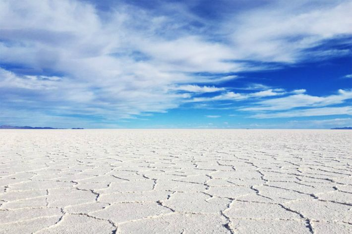

<-Back to Home


- 지각변동으로 인해 바다가 호수가 되었고, 건조한 기후로 인해 물이 모두 증발하고
소금만 남아 만들어진 곳
- 우기는 12월부터 3월까지이다.
- 우기가 되면 빗물이 고여 거울처럼 하늘의 반영이 생기게 된다.
이 풍경 때문에 '지구에서 가장 큰 거울'이라는 별명이 있다.
- 현지의 투어 회사를 통해 갈 수 있다.
우유니 사막의 모습을 영상으로 보고 싶다면 여기로!
- 초등학생 때 학원에서 우기의 우유니 사막 사진을 보고
어른이 되면 이 곳을 반드시 가야겠다고 생각한 뒤,
우유니 사막에 가는
것은 오랜 꿈이 되었다.
- 치안이 좋지 않아 첫 해외여행으로 가는 것은 어렵지만,
나중에라도 꼭 가고 싶은 곳이다.
| 투어 종류 |
| 당일투어 |
1박2일투어 |
2박3일투어 |
일출투어 |
[TOP]